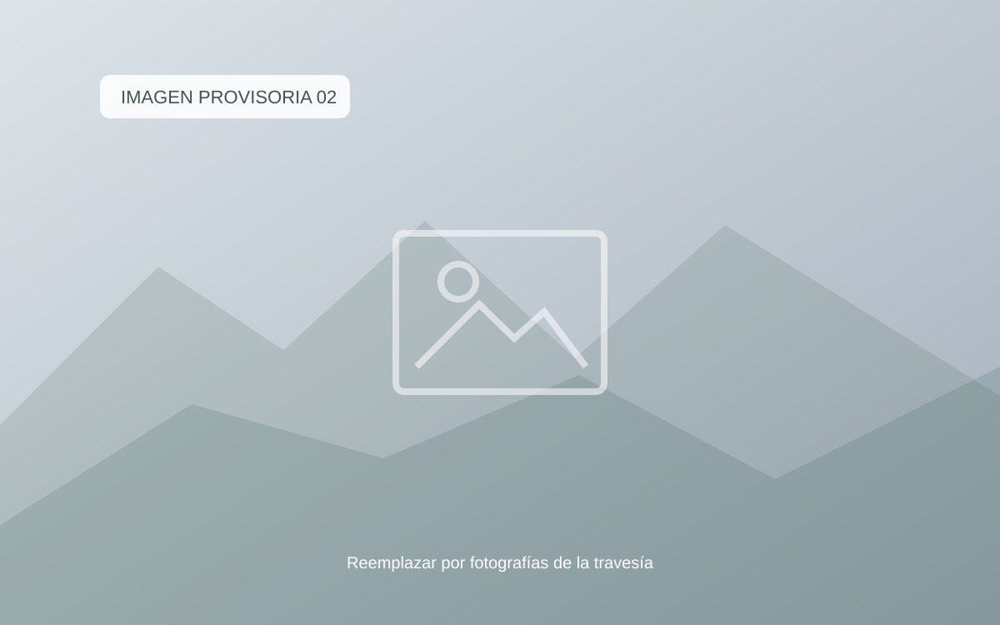
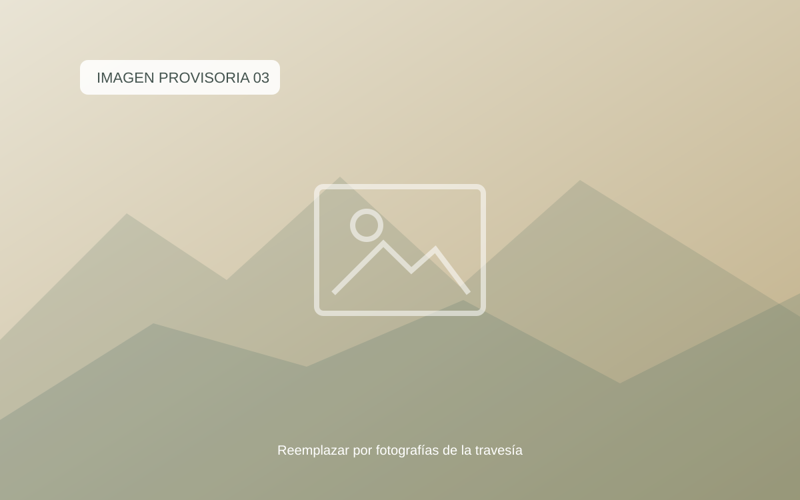
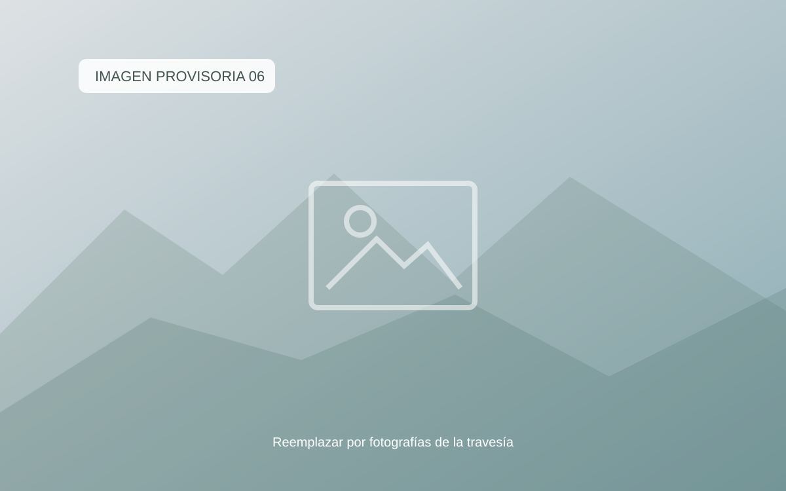

Las travesías son viajes poéticos por América que realiza anualmente la e[ad] Escuela de Arquitectura y Diseño de la Pontificia Universidad Católica de Valparaíso a partir del año 1984. Estos viajes son integrados por alumnos y profesores de Arquitectura y Diseño. En las travesías se realizan obras desde la creatividad del oficio.
Dos talleres de Arquitectura y Diseño se encuentran en Chaitén, en la Región de Los Lagos. Esta bitácora acompaña la preparación del viaje, el trabajo en terreno y el momento de compartir la obra.
El lugar



Imágenes provisorias para El lugar
El borde y el río
Chaitén se emplaza en la costa de la provincia de Palena, en la Región de Los Lagos. La ciudad ocupa una franja baja entre el mar interior y la cuenca del río Blanco. En su tramo urbano, el río desemboca en el mar y separa los sectores norte y sur de la localidad.
Imagen provisoria para situar el borde costero.
La erupción de 2008
La erupción del volcán Chaitén en mayo de 2008 obligó a evacuar la ciudad. La ceniza y los sedimentos alteraron el cauce del río Blanco y sus crecidas inundaron parte del área urbana. El río sigue siendo una referencia para leer cómo cambió la relación de la ciudad con su borde.
Imagen provisoria para acompañar el registro histórico.
Fundamento, faenas e imágenes provisorias para la maqueta.
Fundamento
Una obra de travesía nace de una pregunta que el taller hace al lugar. El fundamento reúne esa pregunta, las observaciones que llevaron a formularla y la primera decisión que orienta el trabajo.
La vista de conjunto sirve para relacionar esa decisión inicial con el sitio y con las faenas que se presentan en el índice.
Vista de conjunto de la obra. Imagen provisoria · Fecha y autoría por incorporar.
Reconocimiento y trazado
Un croquis de trazado puede dejar a la vista las referencias desde las que se comienza a trabajar. Una nota al margen reúne las dudas que todavía debían comprobarse en el lugar.
Referencias del trazado. Imagen de ejemplo · Fecha y autoría por incorporar.
Preparación del lugar y materiales
En una jornada de preparación, las notas pueden registrar cómo se dispuso el área de trabajo y qué materiales quedaron listos para la siguiente tarea. El audio permite sumar la voz de quien participó en esa decisión.
Voces de la preparación · Audio
Registro por incorporar.
Montaje
Una secuencia de imágenes puede seguir una pieza desde su posición inicial hasta el momento en que se integra al conjunto. Entre dos tomas se vuelve visible el orden del trabajo.
Momento de montaje. Imagen de ejemplo · Fecha y autoría por incorporar.
Una tarea del montaje · Video
Registro por incorporar.
Secuencia de montaje · GIF
Registro por incorporar.
Ajustes y terminaciones
Un registro de detalle permite mostrar qué se revisó al final y por qué. El pie puede indicar qué parte de la obra se está mirando y desde dónde se tomó la imagen.
Vista para el registro final. Imagen provisoria · Fecha y autoría por incorporar.